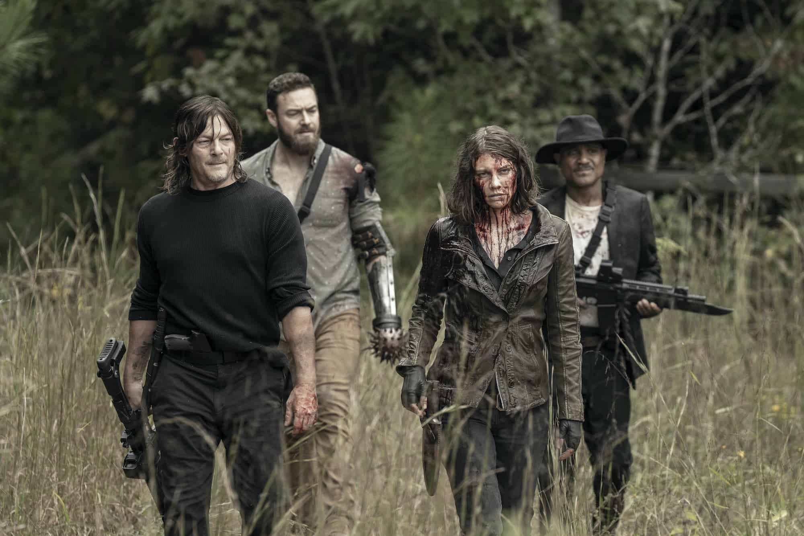

Em The Walking Dead, depois de ser baleado e passar meses em coma, o xerife Rick Grimes (Andrew Lincolm) acorda sozinho em um hospital deserto. Para sua surpresa, o mundo como conhecia deixou de existir depois que um perigoso vírus provoca uma infestação de zumbis na cidade de Cynthiana, em Kentucky, nos Estados Unidos. Desesperado, Rick enfrenta a estranha ameaça na expectativa de reencontrar a mulher Lori (Sarah Wayne Callies) e o filho Cal (Chandler Riggs). Ele decide unir-se aos homens e mulheres sobreviventes para que tenham mais força para combater o fenômeno que os atinge.
Nome dos melhores personagens da série, na minha humilde opinião ❤️!
- Rick Grimes
- Darly Dixon
- Maggie Greene
- Carl Grimes
- Glen Rhe
- Rosita Espinosa